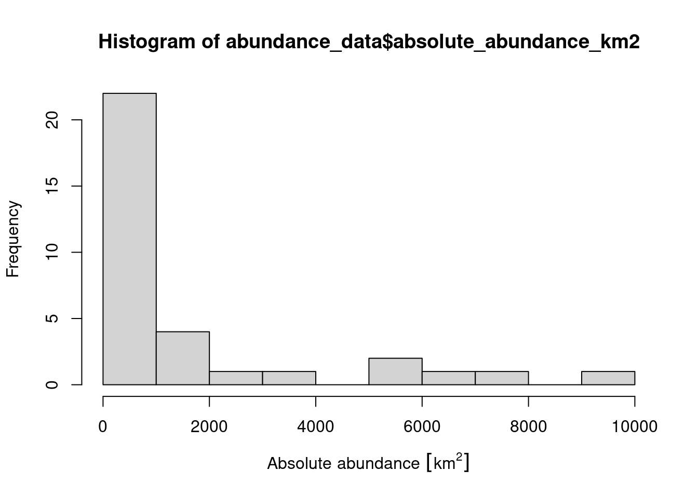

Chapter 4 Gap analysis
4.1 Introduction
Before we begin to prioritize areas for protected area establishment, we should first understand how well existing protected areas are conserving our biodiversity features (i.e., native vegetation classes in Tasmania, Australia). This step is critical: we cannot develop plans to improve conservation of biodiversity if we don’t understand how well existing policies are currently conserving biodiversity! To achieve this, we can perform a “gap analysis”. A gap analysis involves calculating how well each of our biodiversity features (i.e., vegetation classes in this exercise) are represented (covered) by protected areas. Next, we compare current representation by protected areas of each feature (e.g., 5% of their spatial distribution covered by protected areas) to a target threshold (e.g., 20% of their spatial distribution covered by protected areas). This target threshold denotes the minimum amount (e.g., minimum proportion of spatial distribution) that we need of each feature to be represented in the protected area system. Ideally, targets should be based on an estimate of how much area or habitat is needed for ecosystem function or species persistence (Taylor et al. 2017). In practice, targets are generally set using simple rules of thumb (e.g., 10% or 20%), policy (Friedrichs et al. 2018), or species’ geographic range size (Butchart et al. 2015; Rodrigues et al. 2004; Jung et al. 2021).
4.2 Feature abundance
Now we will perform some preliminary calculations to explore the data. First, we will calculate how much of each vegetation feature occurs inside each planning unit (i.e., the abundance of the features). To achieve this, we will use the problem function to create an empty conservation planning problem that only contains the planning unit and biodiversity data. We will then use the feature_abundances function to calculate the total amount of each feature in each planning unit.
# create prioritizr problem with only the data
p0 <- problem(pu_data, veg_data, cost_column = "cost")
# print empty problem,
## we can see that only the cost and feature data are defined
print(p0)## A conservation problem (<ConservationProblem>)
## ├•data
## │├•features: "Banksia woodlands" , … (33 total)
## │└•planning units:
## │ ├•data: <sftbl_dftbldata.frame> (1130 total)
## │ ├•costs: continuous values (between 0.1925 and 61.9273)
## │ ├•extent: 298809.5764, 5167774.5993, 613818.7743, 5502543.7119 (xmin, ymin, xmax, ymax)
## │ └•CRS: WGS 84 / UTM zone 55S (projected)
## ├•formulation
## │├•objective: none specified
## │├•penalties: none specified
## │├•targets: none specified
## │├•constraints: none specified
## │└•decisions: binary decision
## └•optimization
## ├•portfolio: shuffle portfolio (`number_solutions` = 1, …)
## └•solver: highs solver (`gap` = 0.1, `time_limit` = 2147483647, …)
## # ℹ Use `summary(...)` to see complete formulation.# calculate amount of each feature in each planning unit
abundance_data <- feature_abundances(p0)
# print abundance data
print(abundance_data)## # A tibble: 33 × 3
## feature absolute_abundance relative_abundance
## <chr> <dbl> <dbl>
## 1 Banksia woodlands 2.00 1
## 2 Boulders/rock with algae, lichen or sc… 140. 1
## 3 Callitris forests and woodlands 6.00 1
## 4 Cool temperate rainforest 7257. 1
## 5 Eucalyptus (+/- tall) open forest with… 5699. 1
## 6 Eucalyptus open forests with a shrubby… 9180. 1
## 7 Eucalyptus open woodlands with shrubby… 38.0 1
## 8 Eucalyptus tall open forest with a fin… 1908. 1
## 9 Eucalyptus tall open forests and open … 388. 1
## 10 Eucalyptus woodlands with a shrubby un… 6145. 1
## 11 Eucalyptus woodlands with a tussock gr… 1050. 1
## 12 Eucalyptus woodlands with ferns, herbs… 1933. 1
## 13 Freshwater, dams, lakes, lagoons or aq… 1883. 1
## 14 Heathlands 2687. 1
## 15 Leptospermum forests and woodlands 717. 1
## 16 Low closed forest or tall closed shrub… 3397. 1
## 17 Mallee with a tussock grass understorey 1 1
## 18 Melaleuca open forests and woodlands 144. 1
## 19 Melaleuca shrublands and open shrublan… 23.9 1
## 20 Mixed chenopod, samphire +/- forbs 63.3 1
## 21 Naturally bare, sand, rock, claypan, m… 115. 1
## 22 Other Acacia tall open shrublands and … 23.0 1
## 23 Other forests and woodlands 235. 1
## 24 Other open woodlands 167. 1
## 25 Other shrublands 234. 1
## 26 Other tussock grasslands 23.2 1
## 27 Regrowth or modified forests and woodl… 568. 1
## 28 Saline or brackish sedgelands or grass… 24.1 1
## 29 Salt lakes and lagoons 11.0 1
## 30 Sedgelands, rushs or reeds 5047. 1
## 31 Temperate tussock grasslands 781. 1
## 32 Unclassified native vegetation 118. 1
## 33 Wet tussock grassland with herbs, sedg… 463. 1The abundance_data object contains three columns. The feature column contains the name of each feature (derived from names(veg_data)), the absolute_abundance column contains the total amount of each feature in all the planning units, and the relative_abundance column contains the total amount of each feature in the planning units expressed as a proportion of the total amount in the underlying raster data. Since all the raster cells containing vegetation overlap with the planning units, all of the values in the relative_abundance column are equal to one (meaning 100%). Now let’s add a new column with the feature abundances expressed in area units (i.e., km2).
# add new column with feature abundances in km^2
abundance_data$absolute_abundance_km2 <-
(abundance_data$absolute_abundance * prod(res(veg_data))) %>%
set_units(m^2) %>%
set_units(km^2)
# print abundance data
print(abundance_data)## # A tibble: 33 × 4
## feature absolute_abundance relative_abundance absolute_abundance_km2
## <chr> <dbl> <dbl> [km^2]
## 1 Banksia woodlan… 2.00 1 2.00
## 2 Boulders/rock w… 140. 1 140.
## 3 Callitris fores… 6.00 1 6.00
## 4 Cool temperate … 7257. 1 7257.
## 5 Eucalyptus (+/-… 5699. 1 5699.
## 6 Eucalyptus open… 9180. 1 9180.
## 7 Eucalyptus open… 38.0 1 38.0
## 8 Eucalyptus tall… 1908. 1 1908.
## 9 Eucalyptus tall… 388. 1 388.
## 10 Eucalyptus wood… 6145. 1 6145.
## 11 Eucalyptus wood… 1050. 1 1050.
## 12 Eucalyptus wood… 1933. 1 1933.
## 13 Freshwater, dam… 1883. 1 1883.
## 14 Heathlands 2687. 1 2687.
## 15 Leptospermum fo… 717. 1 717.
## 16 Low closed fore… 3397. 1 3397.
## 17 Mallee with a t… 1 1 1
## 18 Melaleuca open … 144. 1 144.
## 19 Melaleuca shrub… 23.9 1 23.9
## 20 Mixed chenopod,… 63.3 1 63.3
## 21 Naturally bare,… 115. 1 115.
## 22 Other Acacia ta… 23.0 1 23.0
## 23 Other forests a… 235. 1 235.
## 24 Other open wood… 167. 1 167.
## 25 Other shrublands 234. 1 234.
## 26 Other tussock g… 23.2 1 23.2
## 27 Regrowth or mod… 568. 1 568.
## 28 Saline or brack… 24.1 1 24.1
## 29 Salt lakes and … 11.0 1 11.0
## 30 Sedgelands, rus… 5047. 1 5047.
## 31 Temperate tusso… 781. 1 781.
## 32 Unclassified na… 118. 1 118.
## 33 Wet tussock gra… 463. 1 463.Now let’s explore the abundance data.
# calculate the average abundance of the features
mean(abundance_data$absolute_abundance_km2)## 1529.413 [km^2]# plot histogram of the features' abundances
hist(abundance_data$absolute_abundance_km2, xlab = "Absolute abundance")
# find the abundance of the feature with the largest abundance
max(abundance_data$absolute_abundance_km2)## 9179.876 [km^2]# find the name of the feature with the largest abundance
abundance_data$feature[which.max(abundance_data$absolute_abundance_km2)]## [1] "Eucalyptus open forests with a shrubby understorey"Now, try to answer the following questions.
- What is the median abundance of the features (hint:
median)? - What is the abundance of the feature with smallest abundance?
- What is the name of the feature with smallest abundance?
- What is the total abundance of all features in the planning units summed together?
- How many features have a total abundance greater than 100 km^2 (hint:
sum(abundance_values > set_units(threshold_value, km^2))?
4.3 Feature representation by protected areas
After calculating the total amount of each feature in the planning units (i.e., the features’ abundances), we will now calculate the amount of each feature in the planning units that are covered by protected areas (i.e., feature representation by protected areas). We can complete this task using the feature_representation function. This function requires (i) a conservation problem object with the planning unit and biodiversity data and also (ii) an object representing a solution to the problem (i.e an object in the same format as the planning unit data with values indicating if the planning units are selected or not).
# create column in planning unit data with binary values (zeros and ones)
# indicating if a planning unit is covered by protected areas or not
pu_data$pa_status <- as.numeric(pu_data$locked_in)
# calculate feature representation by protected areas
repr_data <- eval_feature_representation_summary(p0, pu_data[, "pa_status"])
# print feature representation data
print(repr_data)## # A tibble: 33 × 5
## summary feature total_amount absolute_held relative_held
## <chr> <chr> <dbl> <dbl> <dbl>
## 1 overall Banksia woodlands 2.00 0.367 0.184
## 2 overall Boulders/rock with algae, l… 140. 65.5 0.466
## 3 overall Callitris forests and woodl… 6.00 0.487 0.0812
## 4 overall Cool temperate rainforest 7257. 2992. 0.412
## 5 overall Eucalyptus (+/- tall) open … 5699. 1398. 0.245
## 6 overall Eucalyptus open forests wit… 9180. 1030. 0.112
## 7 overall Eucalyptus open woodlands w… 38.0 15.1 0.396
## 8 overall Eucalyptus tall open forest… 1908. 189. 0.0992
## 9 overall Eucalyptus tall open forest… 388. 27.4 0.0705
## 10 overall Eucalyptus woodlands with a… 6145. 1449. 0.236
## 11 overall Eucalyptus woodlands with a… 1050. 11.3 0.0107
## 12 overall Eucalyptus woodlands with f… 1933. 497. 0.257
## 13 overall Freshwater, dams, lakes, la… 1883. 585. 0.311
## 14 overall Heathlands 2687. 1567. 0.583
## 15 overall Leptospermum forests and wo… 717. 454. 0.633
## 16 overall Low closed forest or tall c… 3397. 1141. 0.336
## 17 overall Mallee with a tussock grass… 1 0 0
## 18 overall Melaleuca open forests and … 144. 27.4 0.191
## 19 overall Melaleuca shrublands and op… 23.9 22.2 0.930
## 20 overall Mixed chenopod, samphire +/… 63.3 30.0 0.473
## 21 overall Naturally bare, sand, rock,… 115. 3.63 0.0316
## 22 overall Other Acacia tall open shru… 23.0 4.00 0.174
## 23 overall Other forests and woodlands 235. 0.271 0.00115
## 24 overall Other open woodlands 167. 97.4 0.583
## 25 overall Other shrublands 234. 92.6 0.395
## 26 overall Other tussock grasslands 23.2 0.0677 0.00292
## 27 overall Regrowth or modified forest… 568. 4.92 0.00866
## 28 overall Saline or brackish sedgelan… 24.1 0 0
## 29 overall Salt lakes and lagoons 11.0 0 0
## 30 overall Sedgelands, rushs or reeds 5047. 2505. 0.496
## 31 overall Temperate tussock grasslands 781. 6 0.00768
## 32 overall Unclassified native vegetat… 118. 4.93 0.0419
## 33 overall Wet tussock grassland with … 463. 43.0 0.0928Similar to the abundance data before, the repr_data object contains three columns. The feature column contains the name of each feature, the absolute_held column shows the total amount of each feature held in the solution (i.e., the planning units covered by protected areas), and the relative_held column shows the proportion of each feature held in the solution (i.e., the proportion of each feature’s spatial distribution held in protected areas). Since the absolute_held values correspond to the number of grid cells in the veg_data object with overlap with protected areas, let’s convert them to area units (i.e., km2) so we can report them.
# add new column with the areas represented in km^2
repr_data$absolute_held_km2 <-
(repr_data$absolute_held * prod(res(veg_data))) %>%
set_units(m^2) %>%
set_units(km^2)
# print representation data
print(repr_data)## # A tibble: 33 × 6
## summary feature total_amount absolute_held relative_held absolute_held_km2
## <chr> <chr> <dbl> <dbl> <dbl> [km^2]
## 1 overall Banksia w… 2.00 0.367 0.184 0.367
## 2 overall Boulders/… 140. 65.5 0.466 65.5
## 3 overall Callitris… 6.00 0.487 0.0812 0.487
## 4 overall Cool temp… 7257. 2992. 0.412 2992.
## 5 overall Eucalyptu… 5699. 1398. 0.245 1398.
## 6 overall Eucalyptu… 9180. 1030. 0.112 1030.
## 7 overall Eucalyptu… 38.0 15.1 0.396 15.1
## 8 overall Eucalyptu… 1908. 189. 0.0992 189.
## 9 overall Eucalyptu… 388. 27.4 0.0705 27.4
## 10 overall Eucalyptu… 6145. 1449. 0.236 1449.
## 11 overall Eucalyptu… 1050. 11.3 0.0107 11.3
## 12 overall Eucalyptu… 1933. 497. 0.257 497.
## 13 overall Freshwate… 1883. 585. 0.311 585.
## 14 overall Heathlands 2687. 1567. 0.583 1567.
## 15 overall Leptosper… 717. 454. 0.633 454.
## 16 overall Low close… 3397. 1141. 0.336 1141.
## 17 overall Mallee wi… 1 0 0 0
## 18 overall Melaleuca… 144. 27.4 0.191 27.4
## 19 overall Melaleuca… 23.9 22.2 0.930 22.2
## 20 overall Mixed che… 63.3 30.0 0.473 30.0
## 21 overall Naturally… 115. 3.63 0.0316 3.63
## 22 overall Other Aca… 23.0 4.00 0.174 4.00
## 23 overall Other for… 235. 0.271 0.00115 0.271
## 24 overall Other ope… 167. 97.4 0.583 97.4
## 25 overall Other shr… 234. 92.6 0.395 92.6
## 26 overall Other tus… 23.2 0.0677 0.00292 0.0677
## 27 overall Regrowth … 568. 4.92 0.00866 4.92
## 28 overall Saline or… 24.1 0 0 0
## 29 overall Salt lake… 11.0 0 0 0
## 30 overall Sedgeland… 5047. 2505. 0.496 2505.
## 31 overall Temperate… 781. 6 0.00768 6
## 32 overall Unclassif… 118. 4.93 0.0419 4.93
## 33 overall Wet tusso… 463. 43.0 0.0928 43.0Now let’s investigate how well the species are represented.
- What is the average proportion of the features held in protected areas (hint:
mean(x, na.rm = TRUE)? - What is the average amount of land in km2 that features are represented by protected areas?
- What is the name of the feature with the greatest proportionate coverage by protected areas?
- What is the name of the feature with the greatest area coverage by protected areas?
- Do questions two and three have the same answer? Why could this be?
- Is there a relationship between the total abundance of a feature and how well it is represented by protected areas (hint:
plot(abundance_data$absolute_abundance, repr_data$relative_held))? - Are any features entirely missing from protected areas (hint:
sum(x == 0))? - If we set a target of 10% coverage by protected areas, how many features fail to meet this target (hint:
sum(relative_held >= target, na.rm = TRUE))? - If we set a target of 30% coverage by protected areas, how many features fail to meet this target?